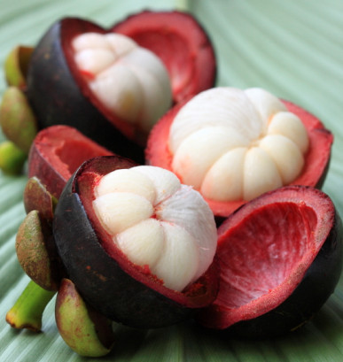

🌿 Tentang Manggis
Manggis merupakan salah satu buah tropis yang banyak ditemukan di wilayah Asia Tenggara, termasuk Indonesia. Buah ini memiliki kulit berwarna ungu tua ketika matang dan daging buah berwarna putih. Daging buah manggis memiliki rasa manis dengan sedikit rasa asam yang khas.Manggis memiliki nama ilmiah Garcinia mangostana L., merupakan anggota famili Clusiaceae dari genus Garcinia. Genus Garcinia sendiri merupakan genus besar yang terdiri dari sekitar 400 spesies yang berasal dari India Timur, Semenanjung Melayu, dan Asia Tenggara termasuk Indonesia
🔎 Informasi Umum
🍃 Ciri-Ciri Manggis
🍈 Bentuk
Buah berbentuk bulat dengan kulit yang relatif tebal.
💜 Kulit
Kulit berubah menjadi ungu tua ketika buah telah matang.
🌿 Kelopak
Kelopak tetap melekat pada bagian bawah buah dan menjadi salah satu cirinya.
🌳 Pohon
Pohon manggis dapat tumbuh sekitar 7sampai 25 meter dengan batang yang cukup besar, berdiameter sekitar 25 hingga 60 cm. Tajuknya rimbun dengan daun hijau mengilap dan dapat hidup selama puluhan tahun.
🌱 Habitat Manggis
🌿 Habitat Alami dan Budidaya
Manggis merupakan tanaman tropis yang tumbuh baik pada wilayah tropika basah. Tanaman ini membutuhkan lingkungan yang hangat, kelembapan yang cukup, serta ketersediaan air yang mendukung pertumbuhannya.
Di Indonesia, tanaman manggis dapat ditemukan pada kebun manggis, kebun campuran, pekarangan, serta wilayah yang memiliki kondisi lingkungan yang sesuai untuk pertumbuhannya.
Penyebaran Manggis di Indonesia
Manggis tersebar di berbagai wilayah Indonesia, terutama daerah yang memiliki kondisi iklim dan lingkungan yang sesuai untuk pertumbuhan tanaman manggis.
🚜 Sentra Budidaya Manggis di Indonesia
Manggis dibudidayakan di sejumlah daerah di Indonesia. Beberapa wilayah dikenal sebagai sentra produksi manggis karena memiliki kondisi lingkungan dan kegiatan budidaya yang mendukung.
Beberapa daerah penghasil manggis antara lain Padang Pariaman dan Lima Puluh Kota.
Beberapa wilayah penghasil antara lain Tasikmalaya, Purwakarta, Bogor, dan Sukabumi.
Wilayah penghasil antara lain Trenggalek, Blitar, dan Banyuwangi.
Manggis juga dibudidayakan di Sumatera Utara, Banten, Jawa Tengah, Bali, Lampung, dan Nusa Tenggara Barat.
💜 Kandungan dan Manfaat
✨ Tahukah Kamu?
Manggis memiliki kulit berwarna ungu tua ketika matang dan daging buah berwarna putih. Perpaduan rasa manis dan sedikit asam membuat buah ini memiliki cita rasa yang khas dan mudah dikenali.